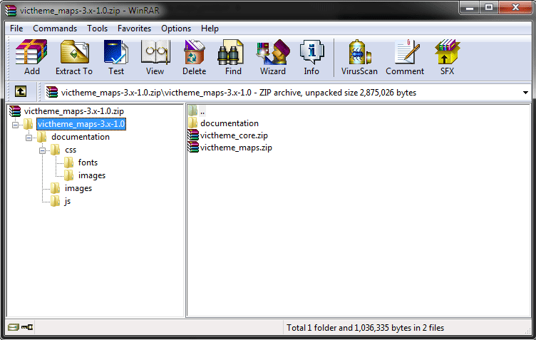
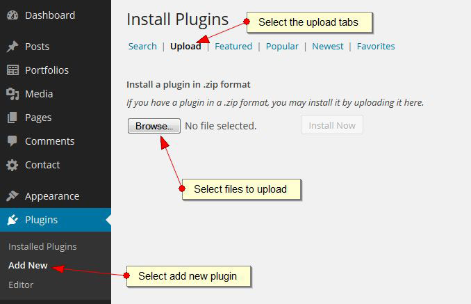
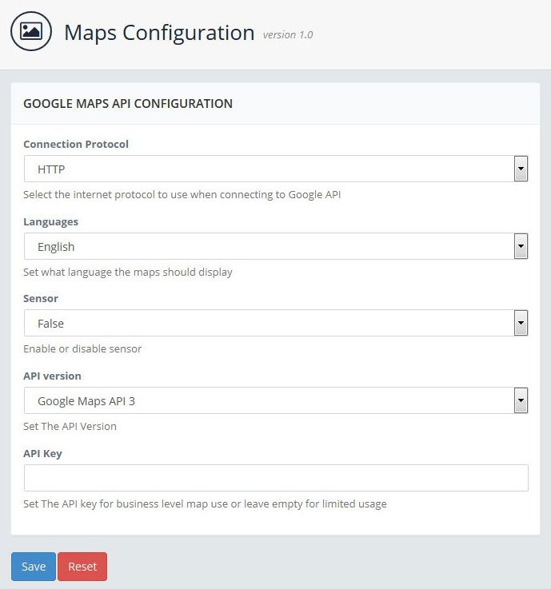
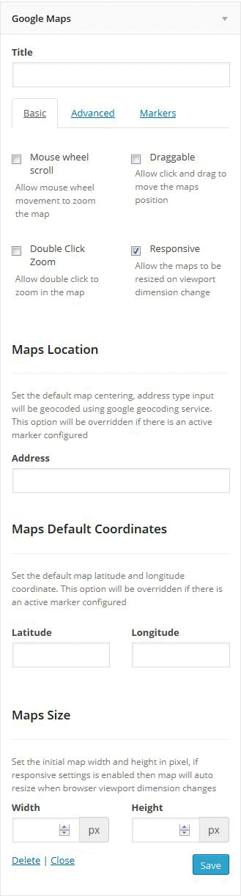
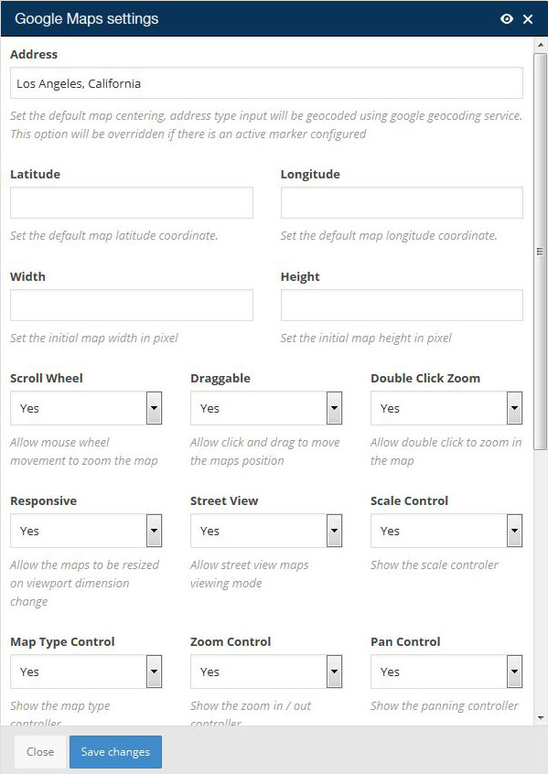
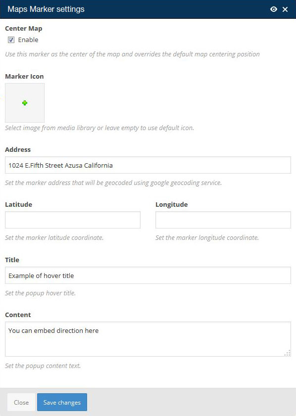

Maps Files
Check file integrity

Installing Plugin
WordPress Uploader

Configuration
Google Maps Configuration

| Attributes | Value | Description |
|---|---|---|
| Connection Protocol | http or https | Define the connection protocol to Google API server |
| Languages | Valid Google language | Set the language for the maps, note this is language as Google API defined and not compatible with WPML plugin. |
| Sensor | true or false | Enable or disable the sensor. |
Widgets
Google Maps Widget

| Attributes | Value | Description |
|---|---|---|
| Address | string | String of valid postal address for geocoding |
| Longitude | Valid longitude string | The longitude number that will be used if geocoding failed |
| Latitude | valid latitude string | The latitude number that will be used if geocoding failed |
| Width | pixel number | The maps width size, this will be overridden if responsive options set to true |
| Height | pixel number | The maps height size |
| Responsive | boolean | Set whether the maps should resize when the screen size changes |
| Zoom | number 1 - 20 | The initial zooming level |
| Zoom control | boolean | Set if the maps should display the zooming controller |
| Zoom control position | Google API positioning | Set the position for the zoom controller |
| Zoom control style | Google API valid zoom controller styles | Set the styles for the zoom controller |
| Pan control | boolean | Set if the maps should display the pan controller or not |
| Pan control position | Google API positioning | Set the position for the pan controller |
| Map type control | boolean | Set if the maps should display the map type controller or not |
| Map type control position | Google API positioning | Set the position for the map type controller |
| Map type control style | Google API map type style | Set the style for the map type controller |
| Scale Control | boolean | Set if the map should display the scale controller |
| Mouse Wheel Scroll | boolean | Set whether the maps can be zoomed via mouse scrolling movement |
| Street View | boolean | Set whether the maps should be able to display the street view mode |
| Map Types | HYBRID|ROADMAP|SATELLITE|TERRAIN | Set the initial map display type, this can change dynamically if the map type controller is activated |
| Draggable | boolean | Set whether the maps content can be dragged with mouse |
| Double Click Zoom | boolean | Set if the maps can be zoomed via mouse click or mouse scroll or zoom controller or not |
| Center Maps | boolean | if this set to true then the maps will be centered according to this marker address or longitude + latitude |
| Marker Address | valid postal address for geocoding | The string of postal address entered here will be used as the position for placing the marker on the maps. |
| Marker Latitude | valid latitude number | The latitude will be used as backup if the geocoding of the address value failed |
| Marker Longitude | boolean | The longitude will be used as backup if the geocoding of the address value failed |
| Marker Title | string | the string will be used as the popup content when user is hovering to this marker |
| Marker Icon | Media Image | If this is not set then the default red Google marker will be served. |
| Marker content | string or shortcodes | The string between the shortcodes tag will be served as the marker popup content that will be visible when user click on the marker. |
Shortcodes
Google Maps
[google_maps
address="String of valid postal address for geocoding"
longitude="Longitude number"
latitude="Latitude number"
width="Map width in pixel"
height="Map height in pixel"
responsive="true|false"
zoom="15"
zoom_control="true|false"
zoom_control_position="TOP_CENTER|TOP_LEFT|TOP_RIGHT|LEFT_TOP|RIGHT_TOP|LEFT_CENTER|RIGHT_CENTER|LEFT_BOTTOM|RIGHT_BOTTOM|BOTTOM_CENTER|BOTTOM_LEFT|BOTTOM_RIGHT"
zoom_control_style="DEFAULT|LARGE|SMALL"
pan_control="true|false"
pan_control_position="TOP_CENTER|TOP_LEFT|TOP_RIGHT|LEFT_TOP|RIGHT_TOP|LEFT_CENTER|RIGHT_CENTER|LEFT_BOTTOM|RIGHT_BOTTOM|BOTTOM_CENTER|BOTTOM_LEFT|BOTTOM_RIGHT"
map_type_control="true|false"
map_type_control_position="TOP_CENTER|TOP_LEFT|TOP_RIGHT|LEFT_TOP|RIGHT_TOP|LEFT_CENTER|RIGHT_CENTER|LEFT_BOTTOM|RIGHT_BOTTOM|BOTTOM_CENTER|BOTTOM_LEFT|BOTTOM_RIGHT"
map_type_control_style="DEFAULT|DROPDOWN_MENU|HORIZONTAL_BAR"
scale_control="true|false"
scrollwheel="true|false"
streetview="true|false"
maptype="HYBRID|ROADMAP|SATELLITE|TERRAIN"
draggable="true|false"
disable_zoom="true|false"
title="string to act as the hover title, this will only works if no marker is defined"
html="string to act as the popup content, this will only works if no marker is defined"
]
[google_marker
center="true|false"
address="string valid address for geocoding"
latitude="fallback latitude if geocoding failed"
longitude="fallback longitude if geocoding failed"
title="the hover title for the icon"
icon="the full url for the icon image"
]
some content for the popup content
[/google_marker]
[/google_maps]
| Attributes | Value | Description |
|---|---|---|
| address | string | String of valid postal address for geocoding |
| longitude | Valid longitude string | The longitude number that will be used if geocoding failed |
| latitude | valid latitude string | The latitude number that will be used if geocoding failed |
| width | pixel number | The maps width size, this will be overridden if responsive options set to true |
| height | pixel number | The maps height size |
| responsive | boolean | Set whether the maps should resize when the screen size changes |
| zoom | number 1 - 20 | The initial zooming level |
| zoom_control | boolean | Set if the maps should display the zooming controller |
| zoom_control_position | Google API positioning | Set the position for the zoom controller |
| zoom_control_style | Google API valid zoom controller styles | Set the styles for the zoom controller |
| pan_control | boolean | Set if the maps should display the pan controller or not |
| pan_control_position | Google API positioning | Set the position for the pan controller |
| map_type_control | boolean | Set if the maps should display the map type controller or not |
| map_type_control_position | Google API positioning | Set the position for the map type controller |
| map_type_control_style | Google API map type style | Set the style for the map type controller |
| scale_control | boolean | Set if the map should display the scale controller |
| scrollwheel | boolean | Set whether the maps can be zoomed via mouse scrolling movement |
| streetview | boolean | Set whether the maps should be able to display the street view mode |
| maptype | HYBRID|ROADMAP|SATELLITE|TERRAIN | Set the initial map display type, this can change dynamically if the map type controller is activated |
| draggable | boolean | Set whether the maps content can be dragged with mouse |
| disable_zoom | boolean | Set if the maps can be zoomed via mouse click or mouse scroll or zoom controller or not |
| title | string | Set the first marker title, this will only works if no additional marker is defined |
| html | string | Set first marker popup content, this will only works if no additional marker is defined |
Google Maps Marker
[google_marker
center="true|false"
address="string valid address for geocoding"
latitude="fallback latitude if geocoding failed"
longitude="fallback longitude if geocoding failed"
title="the hover title for the icon"
icon="the full url for the icon image
]
Some content to act as the marker popup content, additional shortcodes will be processed.
[/google_marker]
| Attributes | Value | Description |
|---|---|---|
| center | boolean | if this set to true then the maps will be centered according to this marker address or longitude + latitude |
| address | valid postal address for geocoding | The string of postal address entered here will be used as the position for placing the marker on the maps. |
| latitude | valid latitude number | The latitude will be used as backup if the geocoding of the address value failed |
| longitude | boolean | The longitude will be used as backup if the geocoding of the address value failed |
| title | string | the string will be used as the popup content when user is hovering to this marker |
| icon | Full url of the image | The url entered here will be used to serve as the marker image, if this is not set then the default red Google marker will be served. |
| content | string or shortcodes | The string between the shortcodes tag will be served as the marker popup content that will be visible when user click on the marker. |
Visual Composer Integration
Google Maps Element

| Attributes | Value | Description |
|---|---|---|
| Address | string | String of valid postal address for geocoding |
| Longitude | Valid longitude string | The longitude number that will be used if geocoding failed |
| Latitude | valid latitude string | The latitude number that will be used if geocoding failed |
| Width | pixel number | The maps width size, this will be overridden if responsive options set to true |
| Height | pixel number | The maps height size |
| Responsive | boolean | Set whether the maps should resize when the screen size changes |
| Zoom | number 1 - 20 | The initial zooming level |
| Zoom control | boolean | Set if the maps should display the zooming controller |
| Zoom control position | Google API positioning | Set the position for the zoom controller |
| Zoom control style | Google API valid zoom controller styles | Set the styles for the zoom controller |
| Pan control | boolean | Set if the maps should display the pan controller or not |
| Pan control position | Google API positioning | Set the position for the pan controller |
| Map type control | boolean | Set if the maps should display the map type controller or not |
| Map type control position | Google API positioning | Set the position for the map type controller |
| Map type control style | Google API map type style | Set the style for the map type controller |
| Scale Control | boolean | Set if the map should display the scale controller |
| Mouse Wheel Scroll | boolean | Set whether the maps can be zoomed via mouse scrolling movement |
| Street View | boolean | Set whether the maps should be able to display the street view mode |
| Map Types | HYBRID|ROADMAP|SATELLITE|TERRAIN | Set the initial map display type, this can change dynamically if the map type controller is activated |
| Draggable | boolean | Set whether the maps content can be dragged with mouse |
| Double Click Zoom | boolean | Set if the maps can be zoomed via mouse click or mouse scroll or zoom controller or not |
Google Maps Marker

| Attributes | Value | Description |
|---|---|---|
| Center Maps | boolean | if this set to true then the maps will be centered according to this marker address or longitude + latitude |
| Marker Address | valid postal address for geocoding | The string of postal address entered here will be used as the position for placing the marker on the maps. |
| Marker Latitude | valid latitude number | The latitude will be used as backup if the geocoding of the address value failed |
| Marker Longitude | boolean | The longitude will be used as backup if the geocoding of the address value failed |
| Marker Title | string | the string will be used as the popup content when user is hovering to this marker |
| Marker Icon | Media Image | If this is not set then the default red Google marker will be served. |
| Marker content | string or shortcodes | The string between the shortcodes tag will be served as the marker popup content that will be visible when user click on the marker. |
Credits
Thank you for the plugins authors that made this theme possible
JavaScripts
- jQuery $.goMap - Jevgenijs Shtrauss
- Google Maps API - Google.com